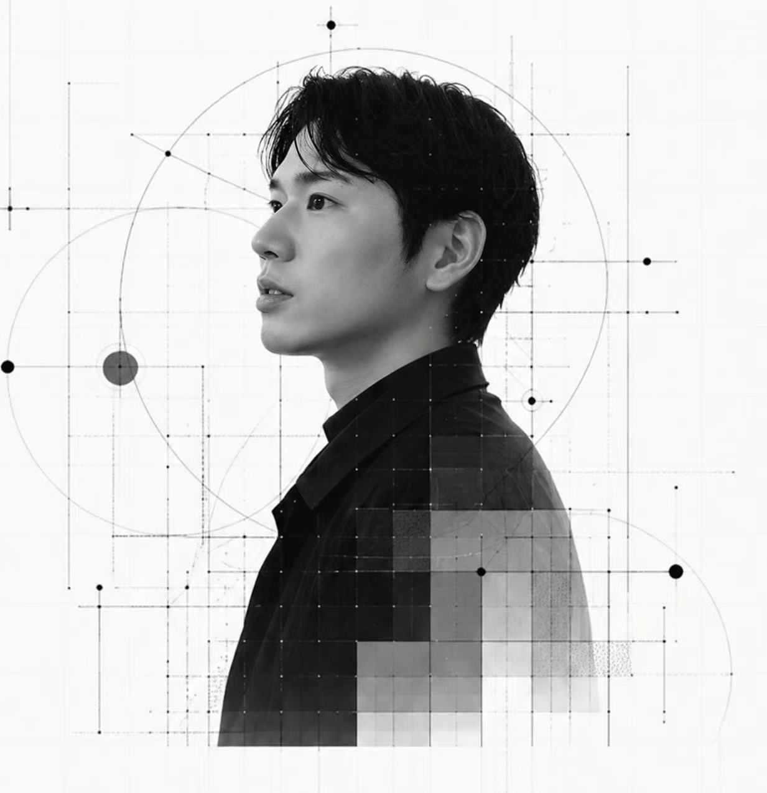

Founder
Message

仮想が、現実を超える時代へ。
私たちは、お客様の想像を超えることを自分たちへのミッションにしています。 キャラクターをつくるとき、コンテンツをつくるとき、 その先にいる誰かの心が動く瞬間を、いつも起点にしながら。 120%の満足を、ともに実現します。
毛利 雄一
代表取締役
代表取締役の毛利雄一は、ステラー株式会社を通じて、物語と世界観を持つIPコンテンツ制作と仮想世界づくりを推進しています。 日本、中国、シンガポールを跨ぎ、広告・デジタルマーケティング領域で事業立ち上げと運営を手がけてきた起業家。 シンガポールではMetaと長年パートナーシップを持つTDCXにてMeta Marketing Expertとして、 中小企業から大企業まで数百社以上の広告運用支援を手がける。 ステラー株式会社を通して2022年から中国・上海でIP・VTuber制作事業を立ち上げ、 制作からCSまで現地中国人チームで運営し、累計1,500件超のキャラクター制作実績を持つ。
Company
Overview
- 会社名
- ステラー株式会社
- 代表取締役
- 毛利 雄一
- 所在地
- 大阪府豊中市夕日丘３−１２−３１
- 設立
- 2019年11月13日